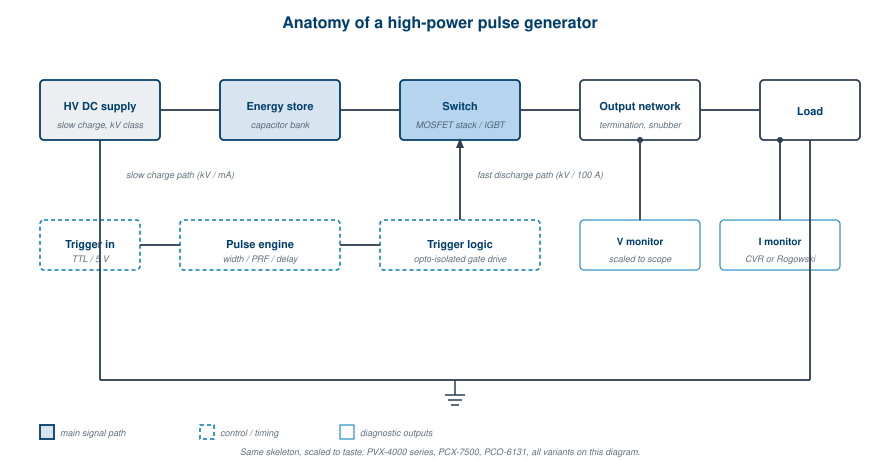
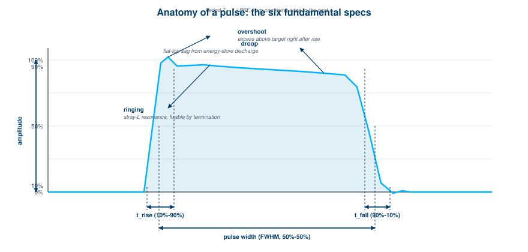

"Every pulser does the same three things. It accumulates energy somewhere. It releases that energy through a switch. It shapes the result for a load. The art is in the trade-offs."
Pulse generators come in two main flavors: voltage pulsers and current pulsers. Both deliver voltage and both deliver current. The difference is which one the device controls and which one the load is allowed to do whatever it wants with.
A voltage pulser maintains a voltage waveform across its output. The current that flows through the load adjusts to whatever the load impedance and the supply can support. If the load is a high impedance (a Pockels cell, a deflection plate, a capacitive bus), the current stays small and the pulser is happy. If the load impedance drops (an arc, a short, a low-resistance plasma), the pulser tries to maintain voltage, the current shoots up, and components have to dissipate the extra power. Bad day for the pulser.
A current pulser is the inverse. It maintains a current waveform through its output. The voltage across the load adjusts to whatever the load needs to draw that current. If the load is a forward-biased laser diode (forward voltage 2 to 4 volts at the operating current), the pulser delivers a few volts and is happy. If the load opens up or the impedance climbs, the pulser tries to maintain current, the voltage rises to the compliance limit, and the pulser shuts down protectively (or, if the design is unlucky, fails).
The choice between voltage and current control is the first decision in any pulsed-power application. Get this wrong and nothing else matters: a voltage pulser into a low-impedance plasma is a destructive science experiment, and a current pulser into an open circuit is just a brief light show.
The relationship that drives every design choice is Ohm's law for power:
P = V × I
Both V and I are real, both are simultaneously present at every node in the circuit, and both contribute to the power dissipated in any component that has resistance. The pulser engineer's job is to keep that product manageable everywhere it matters.
A voltage pulser at 10,000 V driving 1 A into a load (say, a Pockels cell at high duty cycle) means somewhere inside the device, components are dissipating something close to 10 kW unless the design is extraordinarily efficient. That heat has to go somewhere. The current pulser at 450 A with 10 V across its output (load forward voltage 100 V, supply at 110 V) means MOSFETs in the output stage are dissipating 450 × 100 = 45,000 W during the pulse. Also bad.
The duty cycle is what saves you. A 1 microsecond pulse at 1 kHz repetition has a 0.1% duty cycle, so the average dissipation is one-thousandth of the peak. Run the same pulse at 50% duty cycle and the same components have to handle five hundred times more average power. Most pulser data sheets specify a "safe operating area" graph that maps allowed combinations of pulse width, repetition rate, and amplitude. Read those graphs. They are the difference between a long-lived instrument and an expensive paperweight.
Strip away the front panel and any pulse generator, voltage or current, contains the same three functional blocks:
A more integrated pulser adds three more elements:
Figure 2.1 shows the block diagram common to almost every commercial pulser, with the V1 block diagram preserved for continuity.

Figure 2.1, The functional anatomy of a generic high-power pulse generator. The store (capacitor bank), switch (MOSFET stack), and trigger logic are the three indispensable blocks. The HV supply, internal pulse engine, and monitor outputs are what make the instrument practical to use.The V1 product examples in Chapter 9 are all variations on this skeleton. The PVX-4110 and PVX-4150 add overcurrent protection and arc-detection logic. The PCX-7500 adds a PID-controlled current loop. The PCO modules strip everything down to the essentials for embedded use. Same skeleton, different fleshings.
The load on the output of a pulser does not care about your nominal specifications. It only cares about Ohm's law and Kirchhoff's voltage law. Three load types cover almost every real situation, and each one stresses the pulser in a different way.
Most BNC/DEI high-voltage pulsers drive capacitive loads: Pockels cells, deflection plates, microchannel plates, photomultiplier grids. Capacitors do not conduct DC. They conduct only when the voltage across them changes. At the rising edge of a pulse, current flows into the capacitor at a rate determined by the rate of change of voltage:
I = C × dV/dt
Once the capacitor is charged to the pulse voltage, the current drops to zero (apart from leakage). At the falling edge, current flows out at the same rate, in the opposite direction.
The peak current demand at the edges can be enormous. A 1 nF load charged to 1 kV in 25 ns sees a peak current of:
I = 10^-9 × 1000 / 25×10^-9 = 40 A
That 40 A peak appears for only the duration of the rising edge, but it sets the requirement on the switch's transient current capability and on the cable's current-handling spec. The internal capacitance of the pulser and the capacitance of the cable both add to the load capacitance, so the effective C is always larger than the nominal load alone.
The total power dissipation when driving a capacitive load with a periodic pulse is:
P = C × V² × F
where C is the total capacitance (load + cable + internal), V is the pulse voltage, and F is the repetition frequency. This is the equation that determines how hot the pulser gets at high duty cycle, and it is where the maximum-frequency specification comes from. The PVX-4140, for example, has a maximum power rating of 100 W. At 3,500 V output, the maximum allowed total capacitance at 5 kHz is:
C_max = P / (V² × F) = 100 / (3500² × 5000) ≈ 1.63 nF
Subtract roughly 200 pF for the internal capacitance and another 126 pF for 6 ft of RG-59 coaxial cable, and the actual load capacitance allowed is about 1.3 nF. Exceed that and the pulser starts running hotter than it can dissipate, the safe-operating-area limits kick in, and the device throttles back or shuts down.
Resistive loads are easier to reason about but harder to drive efficiently. The current is set directly by Ohm's law:
I = V / R
For a 50 kΩ resistive load at 1500 V, the current is 30 mA. For the PVX-4150 at maximum continuous current of 50 mA, that is comfortably within spec. For a 10 kΩ load at the same voltage, the current is 150 mA, which is three times the maximum. The pulser will current-limit, the output voltage will sag, and the pulse fidelity will suffer.
The average power into a resistive load with a pulsed output is:
P_avg = V × I × duty_cycle
For pulsed work this is usually fine. For DC or near-DC operation, the resistive load becomes the dominant power dissipator and the supply has to deliver continuously. Use this rule when planning: if the load resistance times the maximum continuous current exceeds the pulse voltage, you have a problem.
A practical aside on resistor selection: avoid wire-wound resistors in pulsed circuits. Their inductance is significant at fast edges and causes ringing. Use bulk-film, thick-film, or non-inductive types rated for the peak voltage and the average power.
Inductive loads are the most demanding. The voltage required to push current through an inductor is:
V = L × dI/dt + R × I
The first term is the killer. To drive a 10 µH inductor at 100 A with a 100 ns rise time:
V = 10×10^-6 × 100 / 100×10^-9 = 10,000 V
That 10 kV appears across the inductor only during the rise, but the pulser must be able to deliver it. If the compliance voltage is lower, the rise time stretches until the voltage equation balances. A current pulser with 110 V compliance trying to drive 100 A into 10 µH will achieve a rise time of 9.1 µs, regardless of what its switch can do. The compliance voltage is the limit, not the switch.
This is why true inductive loads are rare in commercial pulsers and why deflection coils, electromagnets, and pulsed-magnetic-field experiments need purpose-built drivers.
Once the pulser is firing into a load, six numbers describe what comes out. Get these six right and almost any pulse spec is well-defined. Miss one and you will spend hours debugging a problem that does not exist.

Figure 2.2, Anatomy of a pulse. The six fundamental specifications are amplitude, rise time, fall time, pulse width, period (or repetition rate), and pulse-top fidelity (overshoot, ringing, droop, and flatness).Amplitude. Peak voltage or current, measured at the flat-top region away from the edges. Specify the polarity (positive, negative, or bipolar). For bipolar pulses, both rails are independent specs.
Rise time. The time for the pulse to climb from 10% to 90% of full amplitude. Some industries use 20%-80%; the laser community sometimes uses 50%-50%. Document which convention is in use because the numbers differ by a factor of roughly 1.7 between conventions. For this book, all rise and fall times are 10%-90% unless explicitly stated otherwise.
Fall time. Same idea, in reverse. For a pulser driving a capacitive load with a single high-side switch (such as the PVX-4140), the fall time depends on the load configuration because the discharge path is through the load termination, not back through the switch. For half-bridge designs (such as the PVX-4110 and PVX-4150), rise and fall times are symmetrical because the switch sources and sinks current actively.
Pulse width. The time the pulse is "on." Conventionally measured at 50% of full amplitude in the laser industry, at 90% in some other communities. Document which.
Period (or repetition rate). Time from one rising edge to the next, or its reciprocal. Maximum repetition rate is bounded by the pulser's average power rating and by recovery time of the switch.
Pulse-top fidelity. Three sub-specs: overshoot (how far above the target amplitude the pulse goes immediately after the rising edge), ringing (oscillations on the flat top), and droop (slow downward sag during the flat top). Overshoot and ringing come from inductance in the output network and load, usually fixable by termination or snubber design. Droop comes from the energy store discharging into the load during the pulse, and it is bounded by the stored energy budget.
The flat-top of a pulse is never perfectly flat. A capacitor energy store loses voltage as it delivers current to the load:
ΔV = (I × Δt) / C
For a 100 µF storage capacitor delivering 10 A for a 10 µs pulse:
ΔV = (10 × 10×10^-6) / (100×10^-6) = 1.0 V
If the pulse amplitude is 1 kV, that 1 V droop is 0.1%, generally acceptable. If the pulse is 1 ms long instead of 10 µs:
ΔV = (10 × 10^-3) / (100×10^-6) = 100 V, a 10% droop
That 10% droop will be visible as a clearly sloped flat top on an oscilloscope, and most applications will not tolerate it. The remedy is either a larger storage capacitor (more energy, more droop budget) or a regulated output (a feedback loop that compensates by raising the driving voltage as the storage capacitor discharges). The PCX-7500 takes the regulated-output approach with its PID-controlled current loop, achieving flat-top droop of better than 1% across multi-millisecond pulses at 450 A.
The rise time of a pulse is connected to the bandwidth of the system that delivers it by a famous approximation:
t_rise ≈ 0.35 / BW
A pulser with a 25 ns rise time has roughly 14 MHz of bandwidth in its output stage. A pulser with a 1 ns rise time has 350 MHz. A pulser with a 100 ps rise time has 3.5 GHz, which is real microwave engineering territory.
This relationship is not exact. The 0.35 constant assumes a single-pole Gaussian-like response. Real pulsers have multiple poles, transmission-line effects, and switch-physics quirks that make the relationship looser. But it is close enough that you can read a rise time off a data sheet and immediately know what bandwidth your scope, your probes, and your cables need to have.
The implication for measurement is direct: if you are measuring a 1 ns rise time, you need a scope with at least 350 MHz of bandwidth, and probably 1 GHz to be safe. If your scope is bandwidth-limited, the rise time you measure will be slower than the actual pulse, by a factor approximately:
t_measured = √(t_pulse² + t_scope²)
A 1 ns pulse measured on a 250 MHz scope (1.4 ns inherent rise time) will appear as:
√(1² + 1.4²) = 1.7 ns
That apparent slowness is the scope, not the pulser. Chapter 7 goes deeper on diagnostics and measurement.
There are two regimes in pulsed-power circuit design. The lumped-element regime treats every wire as zero-impedance and every component as a point. The transmission-line regime acknowledges that signals take a finite time to propagate and that mismatched impedances reflect.
The threshold between regimes is set by the rise time and the physical dimensions:
If t_rise > 6 × (length / propagation_speed), lumped-element analysis works. If t_rise < (length / propagation_speed), full transmission-line analysis is required. Between those, it gets complicated.
For a typical 1 m coaxial cable with propagation velocity 0.66c (200,000,000 m/s), the cable length divided by propagation speed is 5 ns. A 25 ns rise time pulser into 1 m of cable is comfortably in the lumped regime. A 1 ns rise time pulser into the same cable is in the transmission-line regime, and impedance matching matters.
Impedance matching means terminating the cable with a resistance equal to its characteristic impedance, so reflections at the load-end are absorbed rather than bouncing back. Common cable impedances are 50 Ω (RG-58, RG-213), 75 Ω (RG-59, video), and 93 Ω (RG-62, special-purpose). The pulser's output impedance and the cable's characteristic impedance should match within reason. Mismatches cause overshoot, ringing, and ghost pulses, and they are the single most common cause of "weird scope traces" in pulsed-power debugging.
For capacitive loads, impedance matching is impossible (a capacitor is not a resistor). The standard fix is to add a parallel termination resistor at the load: R_term = Z_cable. The resistor dissipates some power but absorbs reflections cleanly. The PVX-4000 series ships with a recommended termination network for exactly this reason.
For applications that need pulses longer than a switching time and shorter than what a capacitor-discharge can sustain without significant droop, a different topology earns its keep: the pulse-forming network, or PFN.
A PFN is a ladder of inductors and capacitors that emulates a charged transmission line. When switched into a matched load, it delivers a square pulse with a duration set by the network's electrical length. The pulse shape is determined by the PFN topology and component values, not by an active control loop. This is both the strength and the limitation: the pulse shape is consistent and rugged, but it is fixed at design time.
PFNs come in five canonical Guillemin types (Type A through Type E) that differ in how the L's and C's are arranged and what trade-offs they make between pulse flatness, parts count, and ease of charging. Type E (the most common) gives a reasonably flat pulse with modest parts count and is what you find in most modern radar modulators.
Chapter 6 develops PFNs in full, with circuit diagrams and design equations. For now, just know that PFNs exist as a third architecture alongside the half-bridge MOSFET pulser and the inductive-storage current driver, and that they are the right answer when the pulse is too long to come from a simple capacitor discharge and too short to need an active regulator.
Compliance voltage is the maximum voltage a current pulser can develop across its output. It is set by the supply voltage, the switch hold-off rating, and the design of the output stage. It is the single specification that determines what loads a current pulser can drive.
If the load forward voltage at the desired current is below the compliance voltage, the pulser delivers the requested current. The voltage across the load self-adjusts to whatever the load needs. Everyone is happy.
If the load forward voltage at the desired current is at or above the compliance voltage, the pulser cannot push the requested current through. The current limits to whatever the compliance voltage allows. The output is a current-limited pulse, often visibly clipped on a scope, and the application does not get what it asked for.
The PCX-7500 ships in several variants with compliance voltages from 5 V to 110 V, plus an "EX" model that accepts an external high-voltage supply for adjustable compliance. Choose the variant that exceeds your load's forward voltage at the operating current with reasonable margin (factor of 1.3 to 1.5 is normal). Choose less and you will be sad on the bench.
For inductive loads, the compliance voltage requirement is much higher than the steady-state load needs, because of the L × dI/dt term in the load voltage equation. A 5 µH inductor at 50 A with a 1 µs rise time needs:
V = 5×10^-6 × 50 / 1×10^-6 = 250 V
at the rising edge, even if the steady-state forward voltage of the load is only a few volts. If your compliance voltage is 110 V, your rise time will stretch to 2.3 µs regardless of how fast the switch is. Engineering pulsed magnetic-field systems is mostly an exercise in compliance-voltage budgeting.
A voltage pulser drives a 200 pF capacitive load with a 500 V, 1 µs pulse at 10 kHz. Approximately how much average power must the pulser dissipate due to the load alone? a. 5 mW b. 0.5 W c. 5 W d. 50 W
A pulse generator has a rise time spec of 10 ns. What scope bandwidth do you need to measure that rise time within 10% of its true value? a. 35 MHz b. 350 MHz c. 1 GHz d. 10 GHz
A current pulser with 50 V compliance voltage attempts to drive 20 A into a 5 µH inductor with a 200 ns rise time. What happens? a. The pulse rise time stretches to roughly 2 µs because the compliance voltage is the limit. b. The pulser overheats and shuts down. c. The current overshoots and rings. d. The output is unaffected because 5 µH is a small inductance.
Which of the following best describes droop? a. The slow downward sag of pulse amplitude during the flat top, caused by the energy store discharging. b. Overshoot at the rising edge. c. Reflection from a mismatched load. d. EMI pickup on the monitor output.
A 1 ns rise time pulser drives a 1 m coaxial cable. Which design regime applies? a. Lumped-element, because 1 m is a short length. b. Transmission-line, because the rise time is shorter than the cable's propagation delay. c. Either, depending on the cable impedance. d. Neither, because rise time and cable length are independent.
The maximum power dissipation in a voltage pulser driving a capacitive load is approximately: a. P = V × I b. P = C × V² × F c. P = I² × R d. P = V² / R
Which load type is most demanding on compliance voltage at fast rise times? a. Resistive b. Capacitive c. Inductive d. All loads are equally demanding
The same seven questions, graded instantly with your score saved on this device.
Answer key at end of book.
Glasoe, G.N. and Lebacqz, J.V. Pulse Generators. MIT Radiation Laboratory Series, Volume 5. McGraw-Hill, 1948. Chapter 1 of Glasoe and Lebacqz remains the most rigorous treatment of pulse-shape definitions and modulator anatomy.
Bluhm, H. Pulsed Power Systems. Springer, 2006. Chapters 2 and 3 cover energy-storage budgets and stored-energy droop in detail.
Tek Application Note 55W-15839, "Bandwidth and Rise Time." A clear short treatment of the t_rise = 0.35/BW relationship, with measurement examples on real scopes.
Kerns, Q.A. and Kerns, K.W. "High-Voltage Pulse Generators." In Methods of Experimental Physics, Volume 2A. Useful for the lumped-vs-transmission-line regime treatment, particularly the threshold rules.
BNC PVX-4000 Series Application Note on capacitive load driving and termination network design. Covers the C × V² × F relationship in operational detail.
End of Chapter 2.
Chapter 3 (Common Pitfalls and Failure Modes) follows.